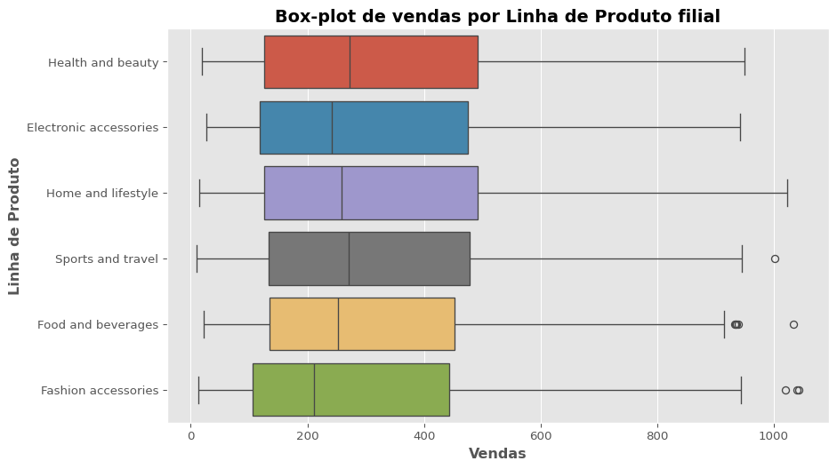

| mean | std | min | q1 | median | q3 | max | skew | kurtosis | |
|---|---|---|---|---|---|---|---|---|---|
| Branch | |||||||||
| Alex | 312.354031 | 231.640025 | 12.6945 | 137.489625 | 240.82800 | 459.340875 | 1039.29 | 0.905500 | -0.003526 |
| Cairo | 319.872506 | 242.447565 | 18.6375 | 119.936250 | 252.88200 | 465.585750 | 1022.49 | 0.888505 | -0.158076 |
| Giza | 337.099715 | 263.160870 | 10.6785 | 121.474500 | 271.41975 | 495.754875 | 1042.65 | 0.855874 | -0.177354 |
Relatório Descritivo de: Supermarket Sales Data
Descrição do Conjunto de Dados
O conjunto de dados utilizado neste estudo foi obtido do repositório público Kaggle, sob o título “Supermarket Sales Data”. Ele compreende 1.000 observações, coletadas por meio do registro automático de transações individuais realizadas em três filiais de uma rede de supermercados em Myanmar, localizadas nas cidades de Yangon, Naypyitaw e Mandalay. O método de coleta de dados está vinculado ao sistema de ponto de venda (PDV) do supermercado, que registra informações detalhadas de cada venda em tempo real.
O conjunto de dados representa uma amostra da população de consumidores atendidos pela rede de supermercados, incluindo variáveis que capturam características do cliente (gênero, tipo de cliente), do produto (linha de produto, preço unitário, quantidade), e da transação (data, horário, forma de pagamento, receita bruta, custo, lucro e avaliação do atendimento).
Este dataset foi escolhido porque oferece uma estrutura rica e variada de dados que permite a aplicação de métodos estatísticos descritivos, inferenciai.
:::
Variáveis
A variável de foco escolhida foi Sales, uma variável quantitativa contínua que representa o valor total de cada venda, incluindo impostos. Ela foi selecionada por ser a mais informativa no contexto do dataset. A partir dela, foram realizadas análises descritivas e comparativas em relação à filial, data e horário das transações, além do estudo de sua distribuição estatística e medidas resumo, como média, mediana, desvio-padrão, valores máximos e mínimos.
:::
Sales (Vendas)
A análise mostrara que a mediana das vendas foi de 240,83 na filial Alex, 252,88 em Cairo e 271,42 em Giza. Isso indica que, na maioria das transações, a filial Giza tende a registrar valores de venda mais elevados do que as demais. A escolha da mediana como medida central se justifica pela assimetria positiva (Figura 1) observada nas três filiais (com coeficientes de assimetria superiores a 0), o que sugere a presença de valores extremos altos que poderiam distorcer a média. Um resumo estatístico pode ser observado na tabela 1 abaixo:
Tabela 1 – Medidas descritivas da variável Sales por filial
:::
Figura 1 – Distribuição das Vendas por filial
:::
Figura 2 – Box-plot Total de vendas por filial
A exibição de múltiplos boxplots no mesmo gráfico é especialmente valiosa ao compararmos dados por categorias. Ao observar o gráfico, notamos que, embora a filial de Giza apresente a maior mediana, o tamanho das caixas indica que não há grande variabilidade nas vendas entre as diferentes filiais. Vale destacar ainda a presença de outliers nas filiais do Cairo e de Alex.
As vendas por linha de produtos também apresentam variações moderadas (Figura 3), com uma distribuição relativamente simétrica, embora algumas categorias, como Food and beverages e Fashion accessories, exibam valores extremos (outliers) que indicam transações pontualmente elevadas.
Quando analisamos as estatísticas por filial, observamos que a média de vendas varia de forma relevante entre os produtos e entre as localidades. Por exemplo, na filial do Cairo, a linha Health and beauty apresenta a maior média de vendas (≈ 377), com um desvio padrão elevado (≈ 260), indicando maior dispersão. Em Alex, a linha com maior média é Home and lifestyle (≈ 345), enquanto Giza apresenta um destaque em Food and beverages (≈ 360).
Essas diferenças sugerem a possibilidade de diferenças estatisticamente significativas entre as médias das filiais e/ou linhas de produtos — o que pode ser investigado com testes como ANOVA ou testes t para verificar se as diferenças são estatisticamente significativas.
Tabela 2 – Medidas descritivas da variável Vendas por Linha de Produto
| mean | std | min | q1 | median | q3 | max | skew | kurtosis | ||
|---|---|---|---|---|---|---|---|---|---|---|
| Branch | Product line | |||||||||
| Alex | Electronic accessories | 305.285225 | 246.411455 | 30.4080 | 101.490375 | 207.0705 | 442.622250 | 931.0350 | 0.931649 | -0.305583 |
| Fashion accessories | 320.245265 | 257.255822 | 12.6945 | 94.179750 | 277.6725 | 485.173500 | 1039.2900 | 0.764347 | -0.181808 | |
| Food and beverages | 295.915526 | 205.761806 | 33.4320 | 165.193875 | 249.0705 | 356.346375 | 932.3370 | 1.272595 | 1.385670 | |
| Health and beauty | 268.037298 | 186.079373 | 19.2465 | 135.549750 | 217.1820 | 370.980750 | 752.6400 | 0.959075 | 0.336907 | |
| Home and lifestyle | 344.879931 | 246.511642 | 19.1940 | 147.672000 | 263.1300 | 493.794000 | 951.8250 | 0.722460 | -0.490832 | |
| Sports and travel | 328.350839 | 235.076176 | 16.1070 | 148.527750 | 271.2780 | 465.990000 | 926.9505 | 0.846356 | -0.015158 | |
| Cairo | Electronic accessories | 310.026245 | 250.401657 | 26.7225 | 112.024500 | 225.0150 | 446.911500 | 942.4485 | 0.970151 | -0.107516 |
| Fashion accessories | 264.730911 | 203.755302 | 35.1960 | 111.389250 | 185.7555 | 380.354625 | 874.1250 | 1.156488 | 0.695796 | |
| Food and beverages | 304.297770 | 220.888774 | 56.4060 | 151.641000 | 234.8010 | 434.988750 | 888.6150 | 1.041767 | 0.319004 | |
| Health and beauty | 376.993585 | 259.566580 | 18.6375 | 145.971000 | 350.0700 | 565.215000 | 922.6350 | 0.454568 | -0.790105 | |
| Home and lifestyle | 350.983290 | 267.137830 | 33.9360 | 120.652875 | 262.5840 | 507.176250 | 1022.4900 | 0.966572 | -0.008772 | |
| Sports and travel | 322.390306 | 246.927203 | 34.6290 | 100.414125 | 275.3100 | 467.586000 | 944.6220 | 0.763114 | -0.482010 | |
| Giza | Electronic accessories | 344.890445 | 243.505198 | 31.7520 | 136.342500 | 272.5800 | 486.979500 | 864.5700 | 0.597486 | -0.813673 |
| Fashion accessories | 331.693385 | 265.166027 | 13.1670 | 125.055000 | 267.3405 | 472.311000 | 1042.6500 | 0.963063 | 0.283504 | |
| Food and beverages | 360.103864 | 293.862985 | 22.6590 | 94.626000 | 292.5405 | 553.392000 | 1034.4600 | 0.771506 | -0.600750 | |
| Health and beauty | 319.525500 | 247.608362 | 32.2770 | 106.871625 | 275.6040 | 473.248125 | 950.2500 | 0.866047 | -0.153341 | |
| Home and lifestyle | 308.790067 | 255.445086 | 14.6790 | 122.524500 | 206.7975 | 441.693000 | 1023.7500 | 1.213547 | 0.997403 | |
| Sports and travel | 350.265067 | 271.062493 | 10.6785 | 132.562500 | 266.0280 | 517.965000 | 1002.1200 | 0.799788 | -0.171545 |
::::
Figura 3 – Box-plot variável Vendas por Linha de Produto

Vendas e no Tempo
Após explorarmos as diferenças entre filiais e linhas de produtos por meio de boxplots e estatísticas descritivas, investigamos como o comportamento das vendas evolui ao longo do tempo. A figura 4 mostra as vendas diárias ao longo dos três primeiros meses de 2019, juntamente com uma média móvel de 7 dias. A linha fina (em tom claro) representa a série original de vendas diárias, que apresenta alta volatilidade, típica do varejo. Já a linha espessa em vermelho corresponde à média móvel, que suaviza as oscilações e revela uma tendência mais clara no comportamento das vendas. A tendência observada indica um desempenho relativamente estável ao longo do período, apesar das flutuações diárias.
Figura 4 – Vendas ao longo do tempo
Por fim, foi investigado padrões de comportamento ao longo da semana e do dia. A figura 5 revela que as vendas se concentram principalmente entre 11h e 17h, com destaque para a terça-feira às 15h e o sábado às 14h, momentos em que são registrados os picos mais altos de movimentação, ambos ultrapassando 480 transações. Como era de se esperar, os finais de semana — especialmente sábado e domingo — concentram um grande volume de vendas, sobretudo no final da manhã e início da tarde. Entre os dias úteis, quinta e sexta-feira também se destacam com horários de pico, sugerindo um aumento da demanda à medida que a semana se aproxima do fim. Em contrapartida, horários como 10h ou após as 19h tendem a registrar menor atividade, embora ocorram alguns picos isolados nesses intervalos.
Figura 5 – Heatmap de Vendas: Dia da Semana x Hora do Dia
::::
Conclusão
A análise descritiva do conjunto de dados de vendas do supermercado revelou que as transações não apresentam variações significativas entre as filiais. A distribuição de vendas nas três filiais é assimétrica á direita, com a presença de outliers em Cairo e Alex. As vendas por linha de produto mostraram variações, especialmente em categorias como Food and Beverages e Fashion Accessories, que possuem maiores desvios padrões e outliers. A análise temporal indicou que, embora as vendas diárias apresentem flutuações, a tendência geral é estável, com as vendas concentradas entre 11h e 17h, especialmente nos finais de semana e no final da tarde durante a semana.
::::